PARTIAL Run Status — 2026-11-21
Published to GitHub: the report, 12 SVG diagrams and 12 editable draw.io files are generated. The pre-generation exclusion inventory and selected-topic fingerprints are committed. GitHub read-back and Pages verification remain separate publication checks.
- Discovery: inspected 32 actual dated report/status HTML artifacts from 2026-10-23 through 2026-11-20 and reconciled 366 historical lesson records before selecting topics.
- Community sweep: all 12 product areas searched. No directly matched Community scenario was verified inside 2026-10-22 through 2026-11-21 for most selected mechanisms. FortiNAC and FortiNAC-F scenario references are dated 2026-09-25; the SD-WAN scenario is older. These are clearly treated as historical scenario material, not recent posts.
- Documentation access: official Fortinet indexed documentation excerpts were available and used. Direct page opens returned HTTP 403 during this run, so full live-page inspection could not be completed. Primary links are included in every lesson for follow-up verification.
- Assets: 12 standalone SVG and 12 editable draw.io files created. Each lesson has its own mechanism-specific topology.
- Examination: exactly 50 graded MCQs with four plausible choices and substantive feedback for all 200 choices.
- Publication: report and index read-back, all asset read-backs and GitHub Pages availability are tracked separately. Public Pages success is not claimed until verified.
- Email: not attempted because email delivery is disabled for this task.
- Remediation: retry direct Fortinet documentation opens when access is restored, then repeat Pages verification. No lesson topic is represented as having a new Community scenario where none was verified.
Today's lesson index
- FortiGate — Enhanced multicast session identity for wildcard-VLAN virtual wire pairs
- FortiManager — Authenticated NTPv4 time synchronization with SHA-256 keys
- FortiAnalyzer — Layer-3 geo-redundant active-active FortiAnalyzer HA
- FortiSwitch — DCBX negotiation, ETS priority groups and priority-based flow control
- FortiAP/Wireless — Dynamic captive-portal redirect URLs from RADIUS Access-Accept
- FortiNAC — RADIUS identity normalization and LDAP domain matching
- FortiNAC-F — Local RADIUS EAP-TLS certificate revocation is OCSP-only
- FortiAuthenticator — TACACS+ client groups as reusable policy targets
- FortiPAM — Reusable Guest Instruction Profiles attached to secrets
- FortiSIEM — Dynamic IP watchlists using LookupIpByUser
- FortiSASE — Source IP anchoring for user/group- and country-specific egress NAT
- Secure SD-WAN — Session-affine load balancing with source-IP and source-destination-IP hash modes
The 30-day exclusion inventory was committed before topic selection. Each selected topic has a product, mechanism, workflow, failure, evidence, remediation, question and diagram fingerprint. A new URL alone was not treated as proof of uniqueness.
Discovery and source discipline
The prior-report audit covered the rolling 30-day window, with a conservative carry-forward of the 2026-10-21 records from the previous inventory. Topic selection was driven by current Fortinet administration/configuration/release documentation. Community/KB material is used only as operational scenario evidence, never as the primary feature definition.
Freshness disclosure: recent Community material was sparse for the mechanisms selected today. The two FortiNAC identity/revocation references are dated September 25, 2026 and therefore fall outside the 30-day window. The SD-WAN load-balancing example is older. No source is mislabeled as a current-month article.
Enhanced multicast session identity for wildcard-VLAN virtual wire pairs
Why this matters
A virtual wire pair (VWP) is a transparent inline pair of interfaces. It forwards traffic between the paired ports while firewall policies still decide which traffic is allowed. In a tagged environment, one VWP can carry several VLANs. Multicast is stateful in FortiOS: the appliance creates multicast sessions to track the source, group, protocol, policy path and forwarding state. If the same source and multicast group are present on more than one VLAN, the VLAN context must remain part of the session identity.
FortiOS 8.0 documents an enhanced multicast session key for wildcard-VLAN VWPs. The important change is not a new multicast routing protocol and not a change to the multicast group itself. The session key now distinguishes the ingress interface and VLAN ID, so the same source/group tuple arriving in VLAN 50 and VLAN 60 is represented by separate sessions. This prevents one VLAN's state from being mistaken for another VLAN's state.
Mechanics and configuration
In a wildcard-VLAN design, the VWP is configured to accept the intended tagged VLAN set. The ingress port receives an Ethernet frame, preserves its VLAN context, and passes it through the VWP's multicast policy path. FortiOS evaluates the multicast policy and creates a session. For the enhanced key, ingress interface and VLAN ID contribute to the session identity. A second copy of the same multicast source and group arriving on another member/VLAN creates a different session entry and can have its own forwarding path and counters.
config system interface
edit "vwp-mcast"
set type vwp
set member "port3" "port4"
set wildcard-vlan enable
set vlan-filter "50 60"
next
end
config firewall multicast-policy
edit 10
set name "vwp-mcast-allow"
set srcintf "vwp-mcast"
set dstintf "vwp-mcast"
set srcaddr "all"
set dstaddr "all"
set action accept
next
endUse the interface and policy syntax supported by the installed FortiOS build and the actual VWP topology; the example shows the relationship between wildcard VLAN acceptance and multicast policy, not a universal production policy. Do not widen the VLAN filter simply to make a test pass.
Evidence and interpretation
Generate the same multicast flow on two VLANs, then run diagnose sys mcast-session list. The documented example shows separate session IDs for the same source and group, with different indev and vlanid values. The NPU session information also carries the VLAN tag values. That proves the session table is distinguishing the VLAN contexts. It does not prove that every receiver has joined the group, that an upstream switch is flooding correctly, or that a downstream application is consuming the packets.
Correlate the session rows with the multicast policy, interface counters and a VLAN-aware packet capture. Capture on the actual ingress/egress interface and preserve 802.1Q headers. A capture on the wrong member can make a working path look silent. NPU offload can also change what is visible in a CPU-side sniffer, so use session state and hardware counters together rather than treating one empty capture as proof of a drop.
Operational troubleshooting
If VLAN 50 works but VLAN 60 does not, verify that VLAN 60 is in the VWP filter, that the expected tag reaches the FortiGate, and that the multicast policy covers the actual ingress/egress interfaces and group. Then compare the two session entries. If both packets appear to reuse one session, check the VWP's wildcard-VLAN configuration and the running FortiOS version before changing multicast routing. If the sessions are distinct but only one forwards, move to policy, interface membership, downstream VLAN trunking and receiver membership; the session-key enhancement does not repair an unrelated VLAN or multicast-policy error.
Design boundary: This feature solves session identity when a wildcard-VLAN VWP carries repeated multicast tuples. It does not replace IGMP/PIM design, multicast policy, VLAN filtering or upstream multicast snooping.
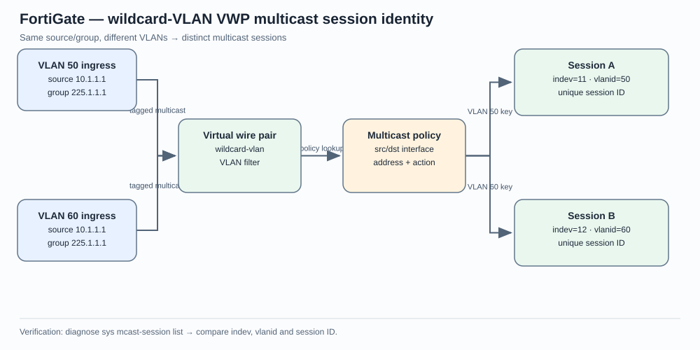
Scenario source: Fortinet Community reference (historical context; not claimed as a new post in the 30-day window)
Authenticated NTPv4 time synchronization with SHA-256 keys
Purpose and security boundary
FortiManager is a control-plane system whose audit records, scheduled jobs, certificate checks, administrative sessions and device-management events depend on trustworthy time. A reachable NTP server is not automatically an authenticated time source. FortiManager 8.0 adds NTPv4 SHA-256 authentication, allowing the client and server to prove that the time exchange uses a shared key rather than relying only on IP reachability.
The authentication contract is a tuple: server address, key identifier, digest algorithm, key encoding and shared key bytes. The key identifier selects the key entry; SHA-256 defines the digest; the format tells each side whether the supplied key is hexadecimal or ASCII. A mismatch in any one of these fields can leave the server reachable while time synchronization remains unauthenticated.
Transaction and configuration
The Fortinet example uses Chrony on Linux. Chrony must allow the FortiManager source address, bind to the intended server interface, and load its key file. A key-file entry includes the numeric key ID, SHA-256 algorithm, encoding and key. The same ID and key material must be configured on FortiManager. The example below uses placeholders; never copy a real production key into a report, ticket or shell history.
config system ntp
config ntpserver
edit "ntp-auth-1"
set server "ntp.example.net"
set authentication enable
set key-type sha256
set key-fmt hex
set key ""
set key-id 123
next
end
end On the Chrony side, the allow rule must include the FortiManager gateway address and the key file must contain the matching key ID and SHA-256 key. An ASCII key is valid when both sides use ASCII; a hexadecimal string is not interchangeable with the same visible characters interpreted as ASCII. The key ID is not a password and does not replace the key itself.
Verification and failure isolation
Run diagnose system ntp status on FortiManager. It lists NTP server information and is the documented verification point. Interpret it with a reachability test and the Chrony configuration. A successful ping proves only IP reachability. It does not prove UDP/123 exchange, server-side access control, key selection or SHA-256 validation. Conversely, an authentication mismatch should not be “fixed” by disabling authentication simply because packets reach the server.
Check in this order: (1) DNS resolution or the configured server IP; (2) route and firewall treatment for NTP; (3) Chrony's allow/bind configuration; (4) whether Chrony actually loaded its key file; (5) matching key ID; (6) SHA-256 on both sides; (7) HEX versus ASCII; and (8) exact key bytes. Compare key IDs and formats without displaying the secret. If several NTP servers are configured, identify which peer is selected before changing all entries.
Operational implications
Time drift creates misleading event ordering, makes change windows and scheduled installs difficult to correlate, and can invalidate time-sensitive authentication or certificate decisions elsewhere in the management environment. Authenticated NTP protects the time-source relationship; it does not encrypt all management traffic or make an untrusted time server trustworthy by itself. Keep the key under controlled rotation, restrict NTP exposure to management networks, and verify synchronization after key rotation or server replacement.
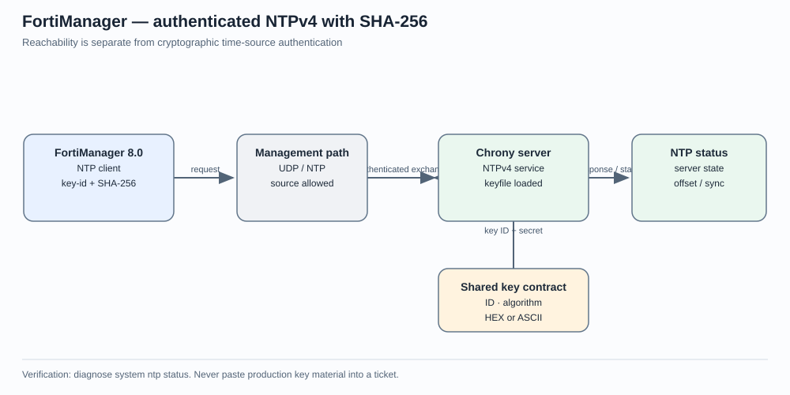
Scenario source: No directly matched Community scenario was verified in the current 30-day window; this lesson is driven by the primary Fortinet documentation.
Layer-3 geo-redundant active-active FortiAnalyzer HA
Architecture and purpose
FortiAnalyzer 8.0 active-active HA is designed for geo-redundancy when two data centers are connected through routed Layer-3 networks rather than a shared Layer-2 segment. This is materially different from active-passive HA. In active-passive mode, the primary receives logs and archive files from its directly connected devices and forwards them to the secondary; only the primary forwards data to a remote server. In active-active mode, each member can receive logs and archive files from its directly connected devices and forward the data to its peer and remote server.
The architecture therefore distributes ingestion across sites. It is not simply a standby appliance waiting for a virtual IP to move. Each FortiAnalyzer member has its own local devices and peer relationship. A cluster VIP is optional, but the guide states that the VIP requires Layer-2 connectivity. For a routed design, use the heartbeat interface to communicate with the peer instead of trying to stretch a VIP across the WAN.
Control-plane formation
Configure both units for active-active mode, a matching group ID/name/password, peer IP and peer serial number. Unicast heartbeat must be enabled for this mode. Any connecting firewalls must permit VRRP (IP protocol 112). During initial cluster formation, at least one node must have Initial Sync disabled. If all nodes have Initial Sync enabled at the start, the cluster can become stuck trying to synchronize. The primary is elected from the nodes with Initial Sync disabled; nodes added later can normally perform their initial synchronization from the current primary.
config system ha
set mode a-a
set group-id 100
set group-name "FAZ-GEO"
set hb-interface "port1"
set initial-sync disable
set unicast enable
set password ""
config peer
edit 1
set ip "192.0.2.22"
set serial-number ""
next
end
set preferred-role primary
end On the second member, use the same cluster identity and peer details, select the secondary role, and allow it to synchronize. Do not configure a VIP unless the members really share the required Layer-2 segment.
Device log routing and failover
Where the FortiGate supports primary and alternate FortiAnalyzer settings, configure both addresses. FortiGate can automatically fall back to the primary when connectivity returns; the documented default for fallback-to-primary is enabled. If the FortiGate cannot use both addresses, point it at a reachable cluster member or the supported VIP where a Layer-2 VIP exists. Multi-VDOM deployments can use the feature when FortiAnalyzer override settings are configured.
config log fortianalyzer setting
set status enable
set server "192.0.2.21"
set alt-server "192.0.2.22"
set fallback-to-primary enable
endEvidence, failure modes and operations
Use diagnose ha status on each FortiAnalyzer. The status view includes member role, serial number, IP, uptime/downtime, initial log synchronization, configuration synchronization and messages. A packet capture filtered for ip proto 112 verifies that VRRP packets can cross the routed path; it does not prove the data synchronization is complete. Confirm both nodes receive logs from their local FortiGates and that each can forward its directly received logs/archive files to the remote server.
Common failure boundaries are a blocked heartbeat, missing VRRP protocol, mismatched group credentials/IDs, both initial-sync flags enabled during first formation, or an incorrectly assumed VIP dependency. If the cluster status is Up but a site's logs are absent, test that site's FortiGate-to-Analyzer connection and local ingestion rather than treating heartbeat success as proof of log flow. After a failover, confirm that the in-control node has the correct certificate/configuration and that both sites resume ingestion. Geo-redundancy improves site resilience; it does not remove the need for capacity planning, WAN latency review, backup policy and per-site log-flow validation.
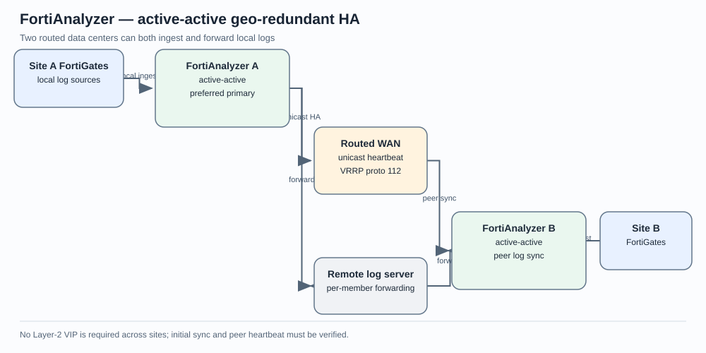
Scenario source: Fortinet Community reference (historical context; not claimed as a new post in the 30-day window)
DCBX negotiation, ETS priority groups and priority-based flow control
What the feature solves
Data Center Bridging (DCB) coordinates Ethernet link behavior for traffic that is sensitive to loss or latency, such as RoCE, FCoE and iSCSI. FortiSwitchOS 8.0 supports DCBX, Enhanced Transmission Selection (ETS) and Priority-based Flow Control (PFC) on the FS-T1024E, FS-T1024F-FPOE, FS-2048F, FS-3032E and FS-3032G models. Do not assume the feature is available on every FortiSwitch. Check the exact model and release before designing a lossless fabric.
DCBX uses LLDP type-length-value (TLV) exchanges to communicate ETS configuration, ETS recommendation, PFC configuration and application priority. Application priority associates protocol identifiers—such as FCoE EtherTypes, RoCE and iSCSI TCP ports—with an IEEE 802.1p priority. That priority must then be classified consistently into a queue and priority group on both ends of the link.
Queue, priority-group and pause mechanics
ETS maps CoS queues to priority groups. There are 16 group identifiers: PG-0 through PG-7 use deficit-weighted round-robin scheduling, while PG-15.0 through PG-15.7 are strict-priority groups. Strict-priority traffic is served first; the configured ETS bandwidth guarantees apply to the remaining bandwidth. The total guaranteed rate across ETS groups must equal 100 percent. Fortinet recommends at least three groups and no more than eight: a PFC-enabled class, a non-PFC/lossy class, and a strict-priority class.
PFC is not a global “pause everything” switch. It pauses selected priorities when the receiver needs the sender to stop transmitting that priority. ETS determines how the egress scheduler shares bandwidth among groups; PFC provides per-priority backpressure. A bad mapping can therefore pause the wrong traffic or leave a lossless class unprotected. The default ets-qos-default policy creates lossy, lossless and high-priority groups, while default-dcbx includes application-priority entries for FCoE, RoCEv1, RoCEv2 and iSCSI.
Configuration relationships
DCBX requires the 802.1p map profile. On the DCBX interface, trust Dot1p rather than simultaneously trusting IP DSCP on that same interface. Both the FortiSwitch port and its peer must be configured for IEEE DCBX. FortiSwitchOS supports the DCBX definition in IEEE 802.1Q-2022, which consolidates the relevant 802.1Qaz behavior.
config switch lldp profile
edit "dcbx-default"
set 802.1-tlvs ets-config ets-rec pfc-config app-prio
config dcbx-application-priority
edit "RoCEv2"
set priority 3
set protocol-id 4791
set sel-field ether-type tcp-port udp-port
next
end
next
end
config switch qos qos-policy
edit "dc-qos"
set ets-mode enable
config priority-group
edit "PG-0"
set rate-percent 70
set priority-based-flow-control disable
next
edit "PG-1"
set rate-percent 20
set priority-based-flow-control enable
next
edit "PG-15.0"
set rate-percent 10
set priority-based-flow-control disable
next
end
next
endMap the CoS queues to the intended priority groups in the Dot1p map, then apply the LLDP profile to the relevant physical ports. The sample rates are illustrative; choose rates and priorities from the application design and verify the total is 100 percent.
Verification and troubleshooting
Inspect the LLDP profile and peer configuration, confirm the application-priority TLVs are enabled, and verify that the interface uses Dot1p trust. Check that both sides advertise compatible PFC/ETS settings and that queue-to-group mappings are identical. If RoCE drops under load, determine whether the traffic is actually classified to the intended priority before changing PFC. If unrelated traffic stalls, inspect whether too many priorities are being paused or whether strict-priority traffic is starving the ETS groups.
Evidence of DCBX TLVs proves that the control-plane negotiation is present; it does not prove the application packets are classified into the intended CoS. Evidence of PFC configuration proves the priority is eligible for pause behavior; it does not prove the peer is sending or honoring pause frames. Correlate LLDP, queue mapping, priority-group rates, interface counters and application behavior. Treat the model limitation and Dot1p-versus-DSCP requirement as design gates, not as late-stage troubleshooting details.
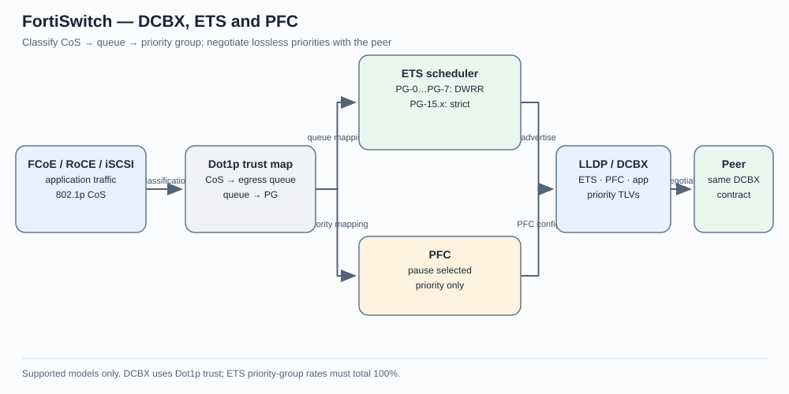
Scenario source: No directly matched Community scenario was verified in the current 30-day window; this lesson is driven by the primary Fortinet documentation.
Dynamic captive-portal redirect URLs from RADIUS Access-Accept
Purpose and transaction
Some wireless guest workflows need a portal URL that varies by user, group, registration state or session. A fixed captive-portal URL on the access point or controller cannot express every policy outcome. FortiOS WiFi controller can instead use a URL returned by the RADIUS policy engine. In FortiAP/FortiWiFi 8.0, the URL is carried in the Fortinet vendor-specific Fortinet-Captive-Portal-URL attribute (vendor attribute 27) in the RADIUS Access-Accept.
The transaction is important: the client associates to a captive-portal SSID; the controller sends the authentication request to the configured RADIUS server; the policy engine returns an Access-Accept containing attribute 27; and the FortiGate WiFi controller uses that URL for the browser redirect. This is not the same as a Change of Authorization (CoA) packet. CoA can change an existing authorization/session; the dynamic URL is selected from the Access-Accept response for the captive-portal flow.
VAP requirements and configuration
Fortinet documents this feature for a tunnel-mode captive-portal VAP with portal-type auth-mac. The dynamic redirect option is disabled by default. The essential FortiOS settings are:
config wireless-controller vap
edit "guest-ise"
set captive-portal enable
set portal-type auth-mac
set captive-portal-dynamic-redirect-url enable
next
endThe VAP must also use the intended RADIUS server and group mapping. On the RADIUS policy engine, the authorization result must include the Fortinet vendor attribute with the URL value. The URL should be reachable from the client network and should correspond to the authorization state returned for that session. Keep the external policy engine configuration limited to the attribute needed for this Fortinet integration; the FortiGate configuration and response are the focus of this lesson.
What to verify
Start with the VAP object: confirm captive portal is enabled, the VAP is in tunnel mode, the portal type is auth-mac, and dynamic redirect is enabled. Then inspect the RADIUS exchange. An Access-Accept without the vendor attribute does not provide a session-specific URL. An Access-Reject is not a dynamic redirect response. Confirm that the attribute identifier and value are correct and that the browser receives the expected redirect.
If users always land on the same page, do not immediately rebuild the SSID. Compare the RADIUS response for two users who should receive different portals. If the attribute is absent or identical, the policy engine is not returning the expected per-session value. If the response differs but the client does not follow it, verify the VAP mode/type and browser path, then inspect controller logs and the URL's reachability. A packet capture that sees only the Access-Accept but not the browser redirect proves the RADIUS attribute arrived, not that the portal transaction completed.
Operational boundaries
Use this when portal selection belongs in the RADIUS authorization decision. It avoids hard-coding one portal for all users and lets a policy engine return a session-specific destination. It does not make an invalid URL reachable, create a portal account, or replace the authorization profile. Keep a deterministic test matrix: one unregistered user, one authorized guest, and one denied user. Compare the RADIUS response and browser destination for each. The most useful diagnostic artifact is the Access-Accept attribute, because it connects the policy decision to the redirect the client should receive.
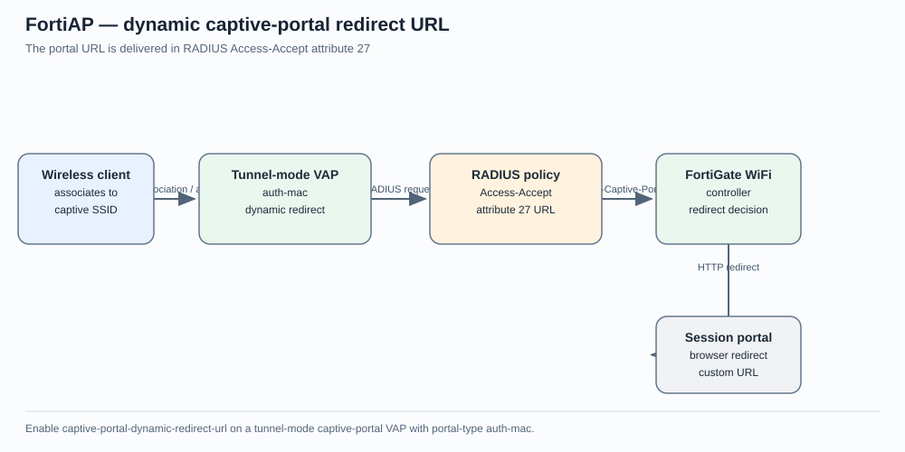
Scenario source: No directly matched Community scenario was verified in the current 30-day window; this lesson is driven by the primary Fortinet documentation.
RADIUS identity normalization and LDAP domain matching
Why authentication can succeed while policy matching fails
FortiNAC uses identity from authentication to populate user records and to evaluate user/host profiles. A RADIUS exchange can complete successfully while the user still fails to match an LDAP-backed policy. The key diagnostic is the exact username that FortiNAC receives and how that string is parsed into a user and domain. Do not assume that a successful RADIUS result automatically proves the same identity was resolved in LDAP.
FortiNAC 9.4 directory configuration supports several qualified username forms: user, user@domain.com, domain\user and domain.com\user. The configured Domain Name is an exact match. If the directory is configured for example.com, a login of john.smith@it.example.com is not an exact match. When a domain is configured and the login supplies a different domain, authentication fails immediately. When no domain is configured and a domain is supplied, FortiNAC can try the qualified form and then the username alone.
Identity and directory transaction
The endpoint supplies an identity in the RADIUS/EAP exchange. FortiNAC records the presented username, separates user and domain components, selects the applicable directory, and resolves the user against LDAP. The directory schema and identifier mapping determine which attributes populate the FortiNAC user record. FortiNAC matches user records by user ID; when multiple directories contain duplicate IDs, the identifier mapping must provide unique values. The guide recommends unique attributes such as userPrincipalName or mail when needed.
A common portal choice is RADIUS/LDAP: RADIUS validates the credentials, while LDAP supplies the registered user record. The documentation notes that if RADIUS authentication succeeds but the user does not exist in LDAP, FortiNAC can still create a local user record. That behavior is materially different from LDAP-only authentication. Be explicit about whether the design requires RADIUS validation, LDAP identity enrichment, or both.
Community scenario: anonymous identity
A Fortinet Community troubleshooting tip dated September 25, 2026 describes Network Access Policies not matching an LDAP user while the RADIUS log displays anonymous. The article points to endpoint Identity Privacy and to a mismatch between the username sent and the Domain Name configured in LDAP. This is older than the current 30-day window, so it is used as a scenario source rather than represented as a new incident. The important lesson is to inspect the identity FortiNAC actually sees before changing policy order or weakening access controls.
Verification and remediation
Check Network > RADIUS and record the exact username. Compare it with the endpoint's identity-privacy behavior and the directory's Domain Name setting. Test the exact supported formats. If the RADIUS log contains anonymous, determine whether the endpoint is sending an anonymous outer identity and whether the policy engine is exposing the identity FortiNAC needs. If the login supplies only jsmith but the directory expects jsmith@example.com, either align the endpoint identity or remove an unintended domain requirement. Do not blindly remove a domain when multiple directories rely on it.
For multiple directories, remember that when no domain is specified the order of authentication attempts cannot be controlled; the first successful directory is used. If the same user ID exists in multiple directories with different roles or security/access attributes, the user's resulting access can vary with the directory that succeeds. Use unique identifier mappings and verify the user record after synchronization. A policy match is downstream of identity resolution; a policy reorder cannot repair a username that never resolved to the intended directory user.
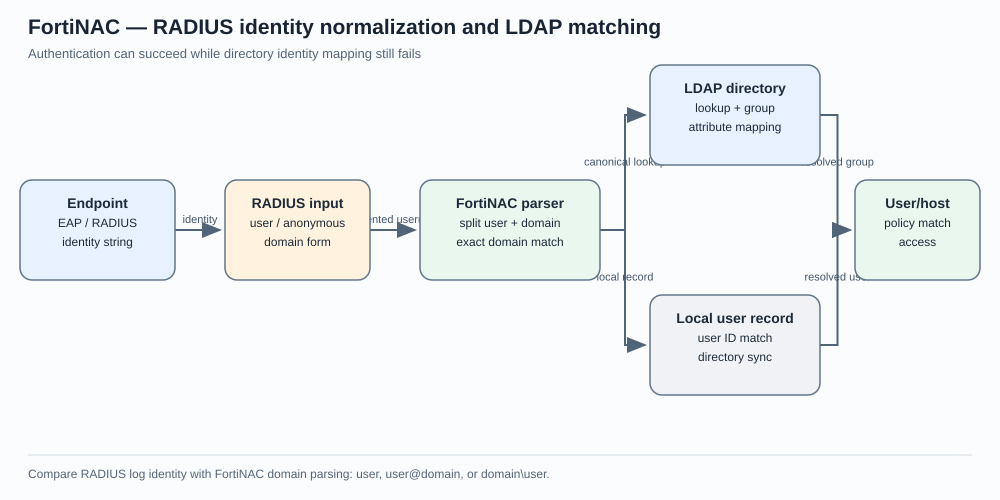
Scenario source: Fortinet Community reference (historical context; not claimed as a new post in the 30-day window)
Local RADIUS EAP-TLS certificate revocation is OCSP-only
Certificate trust and revocation are separate checks
FortiNAC-F Local RADIUS can authenticate endpoints with EAP-TLS, PEAPv0-EAP-TLS, EAP-TTLS/EAP-TLS and TEAP. EAP-TLS is mutual certificate authentication: the client validates the RADIUS server certificate, and FortiNAC validates the client certificate. The root/intermediate CA chain for endpoint certificates must be installed under the Trusted Certificates target RADIUS Endpoint Trust [radius]. Installing a certificate under Server Certificates does not automatically add it to the corresponding trust target.
FortiNAC-F Local RADIUS has a critical revocation boundary: the documented revocation mechanism is OCSP using the URL in the certificate's Authority Information Access (AIA) extension. The Local RADIUS flow does not offer a CRL Distribution Point (CDP) lookup, a CRL import option, or a CDP URL field. A certificate can therefore have a valid chain and a CDP extension yet still fail when OCSP is enabled if it has no OCSP responder URL.
Authentication flow
The endpoint presents its client certificate during EAP-TLS. FortiNAC validates the chain against the CA certificates stored in RADIUS Endpoint Trust [radius]. If OCSP checking is enabled, the Local RADIUS service uses the OCSP URL embedded in the certificate and queries the responder for status. A good status can proceed through authentication; revoked, unknown or unreachable status can prevent authentication according to the configured revocation behavior. The CDP extension is not a fallback source for this Local RADIUS path.
Configuration and evidence
Upload every required root and intermediate CA under System > Certificate Management > Trusted Certificates and select RADIUS Endpoint Trust [radius]. Then configure OCSP under Network > RADIUS > Local Service. Inspect the certificate before enabling OCSP:
openssl x509 -in client.pem -noout -text | \
grep -A3 -E "Authority Information Access|CRL Distribution Points"A certificate that shows a CRL Distribution Point but no OCSP - URI line is not suitable for this Local RADIUS OCSP check. Test with one known-good and one known-revoked certificate. The RADIUS log and the certificate extensions together explain whether the failure is chain trust, revocation URL, responder reachability or an actually revoked certificate.
HA and remediation
In an HA group, apply the correct trust chain to both primary and secondary as appropriate. The Community technical tip notes that the node in control performs the OCSP query after failover, so the responder URL must resolve and be reachable over DNS/HTTP from both appliances. A primary-only test does not prove the secondary can complete the same authentication after takeover.
If OCSP is the chosen design, publish an OCSP responder, add its URL to the AIA extension on the issuing CA/certificate template, and reissue or renew client certificates before enabling OCSP broadly. If policy mandates CRL/CDP checking, terminate EAP-TLS on an external RADIUS server that supports CRL validation and configure FortiNAC-F as a RADIUS proxy. Do not treat the lack of a CRL toggle as a broken GUI; it is a documented product boundary. Enabling OCSP before every endpoint certificate has an OCSP URL can create a widespread authentication outage.
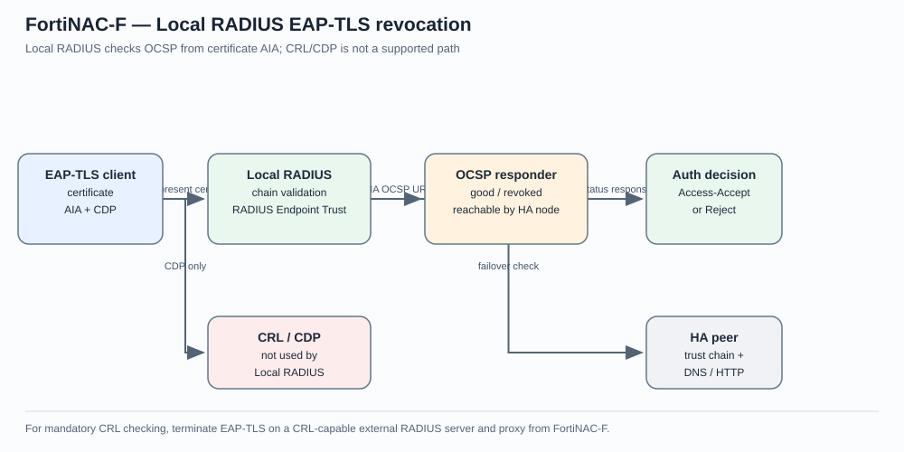
Scenario source: Fortinet Community reference (historical context; not claimed as a new post in the 30-day window)
TACACS+ client groups as reusable policy targets
Scaling TACACS+ policy assignment
FortiAuthenticator 8.0.2 adds TACACS+ client groups for environments with many network devices. A TACACS+ client is the network device identity that FortiAuthenticator recognizes from the source address and shared secret. A client group is a reusable collection of those client objects. A TACACS+ policy can target individual clients, client groups, or a combination. This removes the need to select hundreds of routers and switches one by one every time a policy is created or changed.
The feature is an object-management improvement, not a new TACACS+ packet format. The request still arrives from a network device, the client object/group determines which policy can accept the request, and the policy selects the identity source and TACACS+ response. The group is a policy-targeting abstraction; it is not an end-user directory group and does not itself authenticate an administrator.
Object relationships and transaction
Create or import the individual TACACS+ clients first. FortiAuthenticator supports client entries with a name, address or subnet, shared secret and optional policy. Then create a group under Authentication > TACACS+ Service > Clients > Group and add the intended client objects. In Authentication > TACACS+ Service > Policies, select the client group in the Chosen TACACS+ Client Groups box. The policy still defines identity sources, username format, realms, local-user override behavior and the TACACS+ response.
For example, a regional group can contain the management addresses of routers and switches in that region. A policy can bind that group to an AD-backed realm and a response profile. If a new switch is added, add its client object to the group; the policy does not need to be rebuilt. Keep client address and shared-secret uniqueness under change control, especially when devices are behind NAT or use a shared management proxy.
API and verification
FortiAuthenticator 8.0.2 adds REST API resources for TACACS+ client groups and client/group associations, including /tacplusclientgroups/ and /tacplusgroupclient/. These allow automation to maintain the same object model used in the GUI. Treat the group object and its membership as separate API resources: creating a group does not prove that the expected devices were associated with it.
Verify the group membership in the Clients > Group tab, then inspect the TACACS+ policy and confirm that the group appears in its selected targets. Generate a test request from a member device and confirm the source IP matches the client object, the intended policy is selected, the identity source is reached, and the expected response is returned. A request from an ungrouped device should not be assumed to inherit the group policy.
Failure boundaries
Typical failures are a client address mismatch, a missing group association, a group that is not selected in the policy, or an unexpected username/realm format. FortiAuthenticator supports username forms such as username@realm, realm\username and realm/username; align the network device's login format with the policy. When debugging, separate the client match from identity authentication. If the request is not recognized as a configured client, changing the realm or password will not fix the first failure.
Use groups to reduce policy administration, but keep membership meaningful. A very broad group can unintentionally grant the same TACACS+ policy to devices that should have different command authorization. Test one device from each intended class after bulk membership changes and review the REST API result before declaring automation successful.
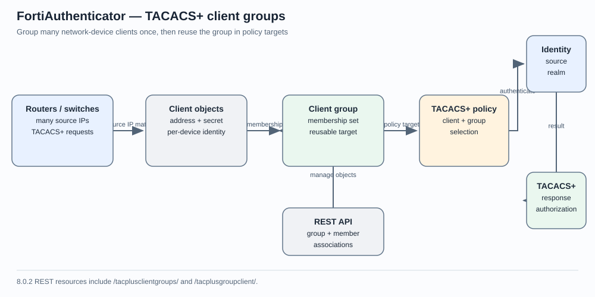
Scenario source: No directly matched Community scenario was verified in the current 30-day window; this lesson is driven by the primary Fortinet documentation.
Reusable Guest Instruction Profiles attached to secrets
Purpose: separate operating guidance from the credential object
FortiPAM 1.9.0 introduces Guest Instructions: formatted guidance that can be shown when a guest visits a secret. The instruction profile is created independently of the secret, so the same operating procedure can be reused across several secrets. This is useful when a guest needs target-specific access context, change steps, maintenance notes or a diagram/video without placing those instructions inside a credential field or duplicating them for every target.
Keep the object boundaries clear. A secret stores the privileged access material and its access/checkout controls. An instruction profile stores human-readable guidance and optional media. Attaching a profile does not grant access to the secret, change the credential, bypass approval, or change session recording. The guest must still be authorized to visit/check out the secret before the instructions become relevant.
Enablement and resource lifecycle
Enable Guest Instruction Feature in System > Settings > Advanced. If the profile will contain uploaded or embedded images/videos, set Instruction Resources Allocation (%) to a value greater than zero. The resource manager supports image and video formats including PNG, JPEG, GIF, BMP, WebP, MP4, AVI, WebM and MKV; the documented maximum file size is 500 MiB. Create a resource in Secret Settings > Instruction Profile > Manage Resources, then create a reusable profile in the Instruction Profile tab.
The profile editor supports formatted text, headings and embedded media. You can paste media into the editor or insert a previously uploaded resource. Replacing a shared resource updates the profiles that reference it, so a resource replacement is a content change with multiple downstream consumers. Use versioned resource names and review every referencing profile before replacing an image or video used in a production procedure.
Attach and verify
After creating the profile, open Secrets > Secrets, edit the target secret, go to Settings, and select the profile in the Guest Instruction dropdown. The same profile can be attached to more than one secret. Validate using a guest account that has the appropriate permission and actually checks out the secret. Seeing the profile in the administrator's profile list proves that the profile exists; it does not prove that the secret references it or that the guest can view it.
If the guest sees no guidance, check the feature toggle first, then the resource allocation if media is missing, then the profile's existence, then the secret's Guest Instruction assignment. Finally test the guest checkout path. A profile can exist and contain content while no secret references it. A secret can reference a profile while the guest is not authorized to check it out.
Operational use
Use reusable profiles for controlled procedures such as pre-change checks, emergency access notes, console cabling maps or target-specific maintenance instructions. Keep secrets and instructions under separate review processes: credential rotation should not require editing the instruction profile, and a procedure change should not rotate the credential. Treat the guest view as contextual documentation, not as an enforcement mechanism. If an instruction says “do not reboot” or “capture output first,” FortiPAM does not make the guest comply; access policy and session monitoring remain separate controls.
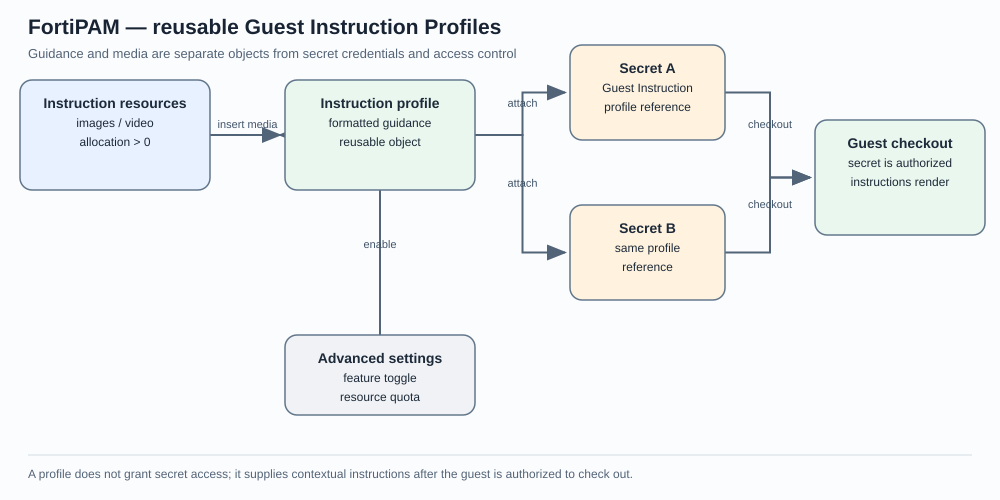
Scenario source: No directly matched Community scenario was verified in the current 30-day window; this lesson is driven by the primary Fortinet documentation.
Dynamic IP watchlists using LookupIpByUser
Why resolve a username to an IP?
Security events often contain a username but no source IP. A response action that blocks or isolates an address needs the user's current IP, not an address guessed from an old event. FortiSIEM 7.5.1 documents a dynamic watchlist function, LookupIpByUser, that can populate an IP-based watchlist from the Username-to-IP mapping in the Identity and Location database even when the triggering rule does not contain an IP event attribute.
The feature bridges identity context and network response. The rule still triggers on its event condition. During Step 3, Define Action, the administrator edits the Watch List and selects LookupIpByUser. FortiSIEM resolves the username against its Identity and Location data and adds the matching current IP to the watchlist. A downstream rule or response can then consume the IP list.
Lifecycle and update behavior
The watchlist is not a one-time copy of an address. Fortinet documents two important cases: if another user takes the IP, the IP is removed from the watchlist; if the offending user takes a different IP, the watchlist is updated with the new address. This behavior matters in DHCP, wireless and remote-access environments where a user can move between addresses. A static IP list would keep targeting the old endpoint or miss the user after reassignment.
The Identity and Location database is therefore a dependency. If endpoint identity collection is stale, incomplete or ambiguous, the lookup can be empty or point to an outdated mapping. The function cannot manufacture a trustworthy IP when the identity system has not learned the user-to-IP relationship. Before enabling automatic blocking, validate the mapping source and the timing between the event, identity update and watchlist action.
Configuration and verification
In Resources > Rules, edit the rule and open Step 3: Define Action. Use the Watch List Edit control and select LookupIpByUser to populate an IP-based watchlist. Test with a rule event that has a username but no IP attribute. Then verify the Identity and Location database contains the expected username/current-IP mapping and confirm the IP appears in the watchlist.
Run two lifecycle tests before relying on the list: move the same user to a new IP and verify the watchlist follows the user; then assign the old IP to a different user and verify it is removed. Those tests prove the dynamic identity mapping behavior. A watchlist row alone does not prove that the downstream firewall, endpoint or connector action succeeded.
Operational safeguards
Use the watchlist as an enrichment stage between detection and response. Keep detection evidence (event ID, rule, username, time) separate from the resolved network indicator (IP, mapping timestamp, source). If the lookup returns no IP, do not fall back to an arbitrary historical address. If a response is destructive—such as quarantine or blocking—require the mapping to be fresh enough for the environment and preserve the resolution result in the incident record. This is especially important where VPN pools, DHCP leases and NAT can cause a single user to appear under multiple addresses.
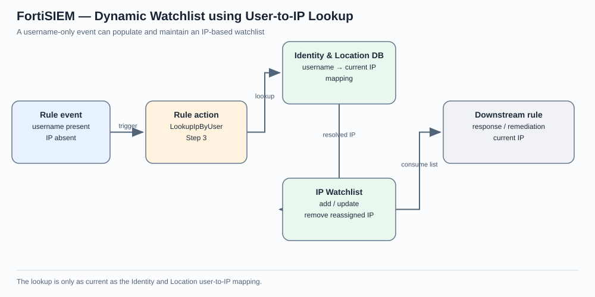
Scenario source: No directly matched Community scenario was verified in the current 30-day window; this lesson is driven by the primary Fortinet documentation.
Source IP anchoring for user/group- and country-specific egress NAT
Purpose and packet path
FortiSASE dedicated public IPs let an organization present a predictable customer-owned egress identity to SaaS providers, private applications, allowlists and reputation systems. Source IP anchoring goes beyond assigning one dedicated address to a PoP: it selects which dedicated public IP is used for source NAT based on remote-user criteria such as a user/group or the country from which the user connects.
At the security PoP, the anchor is implemented by a policy route and associated firewall policy on the FortiGate that provides the PoP function. The remote user enters the PoP, the source criteria are evaluated, the policy route selects the anchor, and the firewall policy applies SNAT using the dedicated public IP. The destination sees that anchored public address. This is a data-plane decision at the PoP, not merely a label in the geolocation feed.
Criteria, licensing and provisioning
Source IP anchoring can match users or groups and country. FortiSASE documents country-level association for the source of remote users; it is not city-level user matching. Geolocation metadata for the public IP is a separate concept and can advertise a city/country through the public IP feed. Do not confuse “a public IP is geolocated to Paris” with “only users from France use this address.” The first is address metadata; the second is a source-anchoring policy.
Initial deployment requires a FortiCare support request with the instance serial number and the mapping of user group, incoming country and dedicated IP for each PoP. Standard, Advanced and Comprehensive subscriptions include an initial dedicated-IP allocation per the applicable release; source anchoring requires additional dedicated IP capacity. The deployment guide describes additional four-address add-on licensing and a limit of seven source IP anchors per PoP. Confirm the entitlement and allocation plan before requesting implementation.
Configuration and verification
After backend implementation, edit the anchor under Network > IP management > Security Public IPs. Select the PoP, edit an IP anchor, and configure Country/region, Users and the geolocation tag. Source criteria changes are applied immediately after saving. Use a controlled test with one user in the matched group/country and one user outside it. Compare the public egress IP observed by the destination and the IP anchor assigned in the PoP.
For an existing Standard instance created before FortiSASE 25.2.c, enabling dedicated IP support may require upgrading to the Feature release. The change is an automated architectural/configuration change and cannot be reverted. Fortinet advises implementing it well before onboarding users or enabling edge-device features. The documented maintenance impact for existing instances can include a two-to-four-hour window, periodic user disconnects, DNS resolution disruption and the need to reconfigure SWG or Thin Edge settings.
Failure boundaries and operations
If the destination sees the default/shared egress address, check that source anchoring was deployed on the backend, the correct IPs are licensed/allocated, and the user's group/country criteria match. Verify the policy route and SNAT behavior at the PoP through the supported operational view and controlled egress test. If the public IP has the right address but third-party services show the wrong city, inspect the public IP feed and allow time for external geolocation providers to update; Fortinet does not control their propagation delay.
Source IP anchoring is useful for allowlists and region-sensitive access, but it is not a substitute for identity authentication, user authorization or data residency controls. Country-level matching and public-IP geolocation are distinct controls. Document the mapping, license allocation, PoP assignment and expected egress address for every anchor so that firewall allowlists and incident responders know which address belongs to which user cohort.
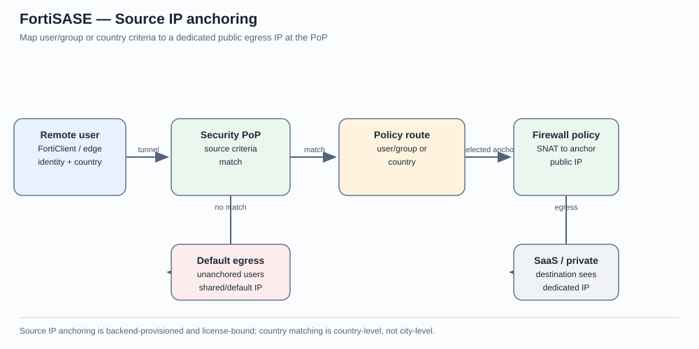
Scenario source: No directly matched Community scenario was verified in the current 30-day window; this lesson is driven by the primary Fortinet documentation.
Session-affine load balancing with source-IP and source-destination-IP hash modes
Separate eligibility from member selection
SD-WAN load balancing has two different decisions. First, the rule strategy determines which members are eligible. In Lowest Cost (SLA) mode, the rule filters for links that satisfy the configured Performance SLA and chooses the lowest-cost eligible link. When load balancing is enabled within the SLA strategy, FortiOS can distribute traffic across all links that satisfy the SLA. Second, the hash mode decides how a flow is assigned among the selected members. A healthy link can be eligible without being selected for every flow.
This lesson focuses on source-based session affinity, not the underlay-bandwidth steering covered in an earlier report. source-ip-based keeps traffic from the same source IP on the same member. source-dest-ip-based keeps traffic from the same source/destination pair on the same member. Round-robin advances through members; session-weight and measured-volume modes distribute by session count or traffic volume rather than by a stable client key.
Configuration
For an explicit SLA rule, enable load balancing and select the hash mode. The example uses a destination pair to preserve the path for a banking application flow:
config system sdwan
config service
edit 10
set mode sla
set load-balance enable
set hash-mode source-dest-ip-based
set src "all"
set dst "all"
config sla
edit "internet-quality"
set id 1
next
end
next
end
endFor the implicit rule, the global load-balance-mode selects the algorithm. Do not confuse that implicit-rule setting with the per-service hash-mode under an explicit rule. The GUI exposes some choices while the CLI offers additional modes; confirm the exact rule object and firmware syntax before changing it.
Why source affinity matters
Some applications bind a session to its public source address. Government and banking sites may reject a session if subsequent connections appear from a different egress address. If load balancing uses a mode that changes the selected WAN as traffic is re-evaluated, the destination can see a different NAT address and terminate the session. Source-IP hashing keeps all destinations from one client on a member; source-destination hashing allows one client to use different members for different destinations while preserving each pair's path.
Choose based on the application's requirement. Use source-IP when a client must use one path for all destinations. Use source-destination-IP when the same client can use different paths for different services but must stay consistent to each service. Neither mode guarantees that the public address will remain unchanged after a member failure, route change, session recreation or NAT pool change. Hash affinity is a member-selection rule, not a globally persistent public-IP reservation.
Evidence and troubleshooting
Check diagnose sys sdwan service4 <id> or the IPv6 equivalent to see the rule mode and selected members. Check diagnose sys sdwan health-check status to see which links are alive and whether they meet SLA thresholds. Then inspect the firewall session and capture egress traffic to verify the actual interface and translated source address. A healthy SLA proves probe reachability/quality to the configured target; it does not prove that a particular application session is pinned to the intended member.
For a banking-site failure, create a controlled single-user test or temporary policy route to one WAN. If the site works on one WAN but fails under load balancing, compare the hash mode and NAT address. Prefer source-IP or source-destination-IP when source stability is required. If only one member meets the SLA, the rule should use that eligible member. If neither meets the SLA but the health-check remains alive, the documented tie behavior can allow balancing across the tied members; inspect the exact service output rather than assuming every SLA miss means all members are removed.
After changing the hash mode, existing sessions may retain their current path until they age out or are cleared according to operational policy. Test new sessions and existing sessions separately. The goal is not perfectly equal byte distribution; it is predictable member selection that satisfies the application's session and SLA requirements.
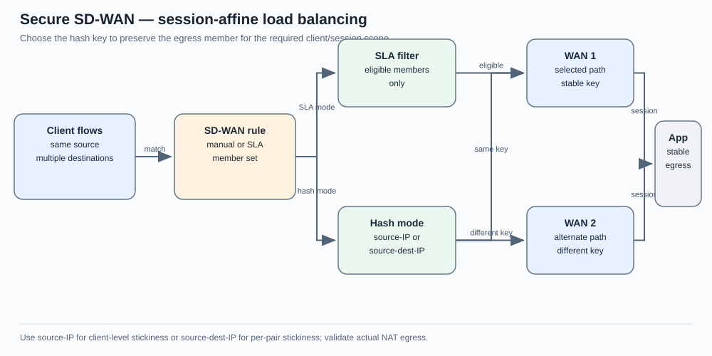
Scenario source: Fortinet Community reference (historical context; not claimed as a new post in the 30-day window)
50-question graded examination
Choose one answer for each question, then submit. The score is calculated automatically. After grading, the page shows the correct answer and a reason for every option, including the distractors. Answer order varies; choice length is not intended to reveal the key.